Su Altı Restoranı
Su Altı Restoranı Nedir? Dünyamız her geçen gün değişiyor ve gelişiyor. Bu gelişim ve değişim içerisinde insanların, lüks anlayışı ve talepleri de değişiyor. Yeni moda ise su altı restoranları olmakta. Hepimiz illaki gidiyoruz restoran ve lokantalara. Fakat denizin içinde, cam bir fanusun arkasından bize bakan, deniz canlılarının ortasında yemek yemek çok farklı olsa gerek. Bu restoranlar arasında ilk inşa edileni ve en çok bilineni ise Hint Okyanusun’daki Mercan Adalarının cenneti Malviler’de bulunan Ithaa Undersea Restaurant’dır.
Maldivler’de bulunan ve deniz seviyesinin 5 metre kadar aşağısında bulunan en fazla bilinen ve ilk yapılanıdır. İngilizceden çevrilmiştir. Dhivehi’de sedef anlamına gelir. 180 derecelik açı ile su altı manzarası sunan lüks bir lokanta. 175 tonluk cam tüp şeklinde inşa edilen Ithaa, Maldivlerin göz bebeği olarak görülüyor.
Deniz seviyesinin 5 metre altında nasıl duruyor bu 175 tonluk cam fanus diyecek olursanız. Kum torbalarıyla sabitlenmiş. Sadece 14 kişilik yeri bulunan bu restoran, ilgi çekmeye devam ediyor ve gün geçtikçe taklitleri artmaya devam ediyor. Ithaa’nın dışında bulunan diğer su altı restoranları şu şekilde;
Cargo Hold Restaurant
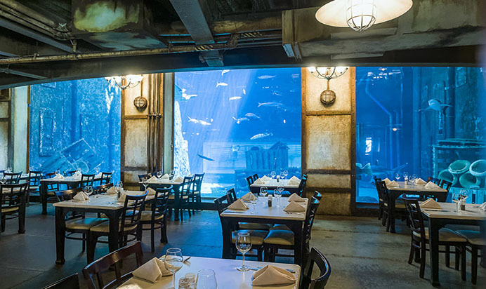Dubai’de bulunuyor ve en iyi restoranlar arasında olduğu söyleniyor. Yemek menüsü ise genelde kendi kültürlerinden yer alıyor.
Sea at Anantara Kihavah Villas
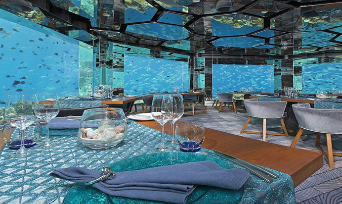Menüleri Avrupa mutfağına göre uyarlanmış ve Maldivler’de bulunuyor. 360 derecelik bir manzara sunuyor.
Nathan Outlaw Al Mahara
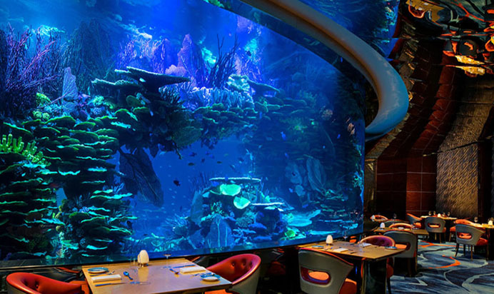Yine Dubai’de bulunan ve çok farklı dizayna sahip bir restoran.
L’Oceanographic Submarino Restaurant
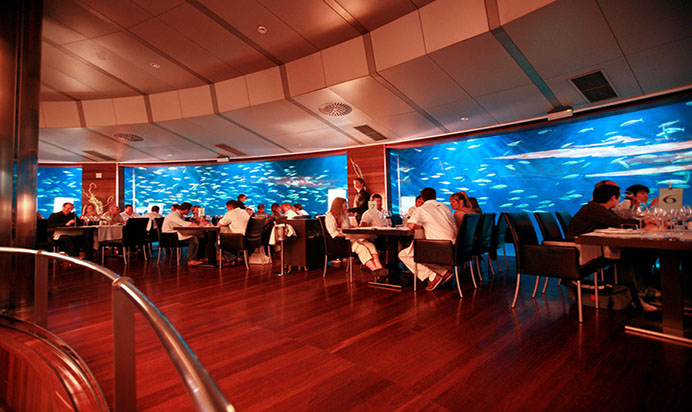Bu restoran ise Valencia’da bulunuyor. Mutfak olarak Akdeniz menüsünü kullanıyor.
Su Altı Restoranı Nedir? Yapılacaklar listenize, mutlaka böyle bir restoranda yemek yemeyi eklemeniz dileği ile keyifli okumalar. Seyahat Kategorimizi ziyaret ederek, bunun gibi ilginç ve gezilebilecek yerler hakkında bilgi sahibi olabilirsiniz.
Disneyland
Disneyland Nedir? Bir Blog’un olacak ve sende Seyahat Kategorisinde, gezilebilecek yerler hakkında bilgi vereceksin. Diyelim ki; araştırmışsın, bulmuşsun ve binlerce yer tanıtmışsın, fakat bu yerlerin içerisinde Disneyland yok. O zaman işte Seyahat Kategorin tam manasıyla işlevini görmemiştir. Neden diyecek olursanız. Bu masalsı parkı herkesin gidip görmesi gerek. Nede olsa hangi yaşta olursak olalım, hepimizin içinde bir parçada olsa çocuk yok mu?
Disneyland Nedir? Aslında Türkiye’de bildiğimiz Lunapark konseptinin, üst düzey ve birazda farklılaştırılmış versiyonu diyebiliriz. İlk olarak ABD’nin Anaheim kentinde açılan eğlence parkı, gün geçtikçe diğer ülkelerde de ilgi görüp açılmaya başlanmıştır. Amerlikalı canlı resimci ve film yapımcısı olan Walt Disney tarafından 1955’te kurulan ve 3 hektarlık bir alana kurması planlanan bu eğlence parkı, günümüzde 34 hektarlık alanda bulunuyor.
Dünyanın en büyük eğlence parkı olan ve önemli bir turizm merkezi olarak görülen Disneyland, Disneyland kahramanlarını yaşatan ve daha çok çocukların ilgisi çeken yapısı ile oldukça fazla tercih edilmektedir. Resimlerde dahi harika duran bu masallardan fırlama park, içinde zamanın nasıl geçtiğini anlamayacağınız türden. Ve bu yüzden, Disneyland parkları gittikçe artmaktadır. Dünya üzerinde bulunan meşhur parklara göz atalım.
Kaliforniya Disneyland
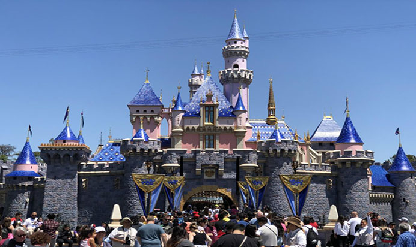Kaliforniya’da ki Disneyland, dünyada kurulan ilk Disneyland parkıdır. 1955 yılnda kurulmuş ve 34 hektarlık alanda yer almaktadır.
Paris Disneyland
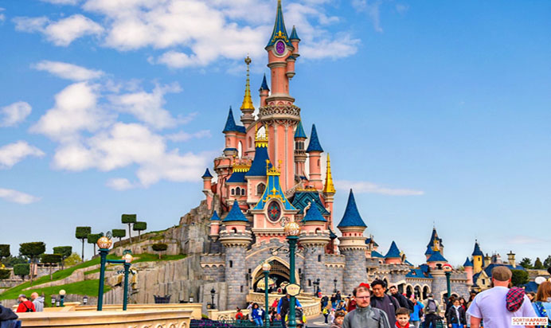Paris’te bulunan Disneyland, aralarında en ünlü olanıdır.
Hong Kong Disneyland
Hong Kong’taki Disneyland ise 28 hektarlık bir alana kurulmuş ve 2005 yılında hizmete girmiş bulunmakta.
Florida Disneyland
ABD’nin Florida Eyaletinde bulunuyor.
Tokyo Disneyland
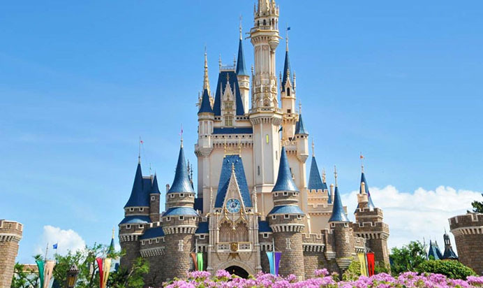1983 yılında kurulmuş.
Yapılacaklar listenize mutlaka ekleyin.
Vietnam'ın Altın Köprüsü
Golden Bridge Nedir? Türkçe karşılığı “Altın Köprü” olan, Vietnam’ın Da Nang bölgesindeki Ba Na tepelerine kurulan köprü. 2 kocaman el üzerinden geçen 150 metre uzunluğundaki altın renginde ki yol sayesinde bu ismi almış.
Metal bir iskelet üzerine fiberglas ile yapılan ve inşası 1 yıl süren köprü, 2018 Haziran ayında hizmete başladı. Deniz seviyesinden tam 1400 metre yükseklikte yer alıyor. 150 metre uzunluğundaki altın köprünün maliyeti 2 milyar dolar olduğu söyleniyor. Köprünün bu kadar yüksekte yapılmış olması maliyeti artıyor. Köprüyü ayakta tutan yapay eller sayesinde, filmlerden fırlamış gibi duran köprünün, yıllık olarak 1.5 milyon ziyaretçi çekmesi bekleniyor.
Tasarımı ile 2 devasa elin tarafından havada tutuluyor hissi veren köprünün tasarımcısı; “yeryüzünden bir altın şerit çıkaran eller” şeklinde açıklama yapmış. Aynı şekilde, köprünün mimarı ise; “Altın Köprü, sisli ve büyülüymüş gibi görünen Ba Na dağının mükemmel manzarasının üzerinde, gökyüzünde bir yürüme yolu olarak tasarlandı” şeklinde açıklama yapmış.
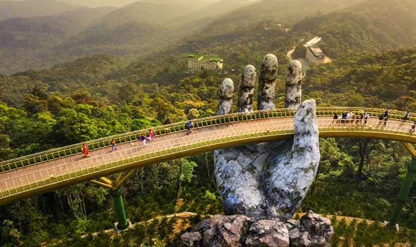Arka planda kalan olağanüstü manzarası ile birlikte devasa ellerin varlığı, turistler için en uğrak fotoğraf çekinme merkezi olmuş durumda. Teleferik istasyonunu bahçelere bağlamak ve turistik cazibe için tasarlanan köprü, sadece yayalar için uygun. Yolunuz düşerse mutlaka uğranması gereken yerlerden birisi. Yapılacaklar listenize ekleyebilirsiniz. Seyahat Kategorimizi ziyaret ederek, ilginç ve gezilmesi gereken yerleri görebilir, hakkında bilgi alabilirsiniz.
Venedik
Venedik Nedir? Aşıklar şehri Venediği mutlaka duymuş hatta resimlerden de olsa görmüşsünüzdür. Sular üzerine inşa edilen bu şehir, gezginlerin en uğrak noktası.
İtalya’nın kuzeydoğusunda bulunuyor. 118 adadan ve büyüklü küçüklü 400 köprüden oluşuyor. Yaya olarak ulaşım bu köprülerden sağlanıyor. Yerli halkın en büyük geçim kaynağı ise balıkçılık. Gondolları ve dar sokakları ile meşhur olan Venedik, nasıl oluyor da ayakta kalıyor merak ettiniz mi?
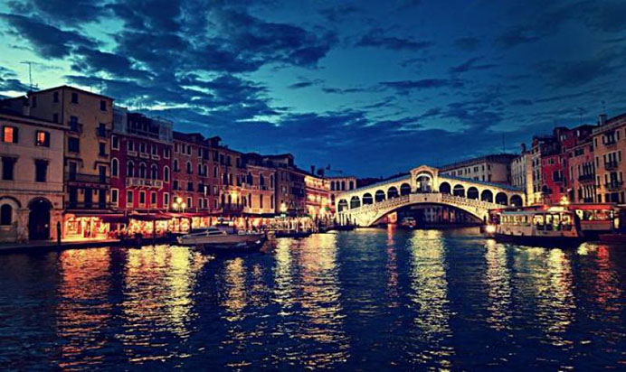Tamamen sular üstüne inşa edilen binalardan oluşuyor. Birbirine çok yakın ve sular üzerinde oluşan bu binalar, altında bulunan ve suya gömülü olan kazıklar sayesinde ayakta duruyor. Çok ilginç değil mi? Tahta bir kazık üzerine inşa edilmiş bir ev içinde yaşıyorsunuz. Nasıl oluyor da yüz yıllardır çökmeden, batmadan ayakta kalıyor?
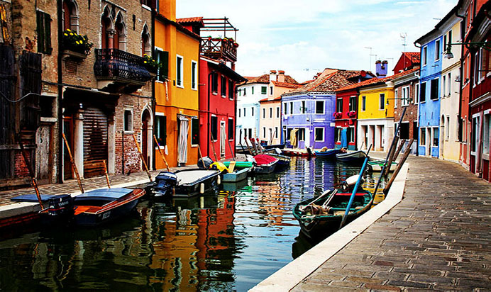Özel bir ağaçtan yapılan bu kazıklar, su altında oksijen olmadığı için çürümüyor. Aksine mineral düzeyi yüksek olan suya sürekli maruz kaldığından dolayı kaya gibi sertleşiyor. Ayrıca kazıklar, yumuşak olan kum ve çamur tabakasını delerek, daha sert olan kil tabakasına battığı için temelini sağlamlaştırmış oluyor. Venedik’teki tüm binaların altında bulunan bu kazıklar, Slovenya bölgesinden getirilmiş.
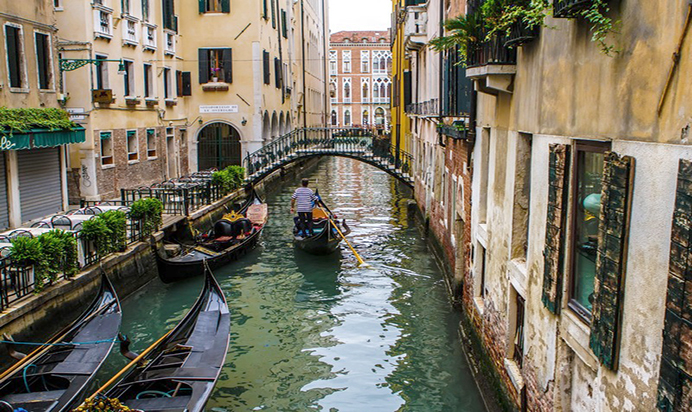Köprülerle bağlantılar kurulan dar sokaklarında yürümek ve yine dar evlerin arasından geçen kanallarda gondollarla bir geziye çıkmak olağanüstü olsa gerek. Özellikle sevgililerin gittiği ve bu yüzden aşıklar şehri olarak ta bilinen Venedik, oldukça fazla turist çekmekte. Gondolculuk başlı başına bir meslek olması ile birlikte, babadan oğla geçen bir meslekmiş ve oldukçada zor olduğu söyleniyor.
Venedik’teki bir çok yer ise UNESCO tarafından koruma altına alındığı ve dünya mirasları arasına alındığı biliniyor. Bu güzel şehri gezmek gibi bir hayaliniz varsa yada yapılacaklar listeniz var ise mutlaka eklemeniz gerek. Venedik Nedir? Nasıl ayakta kalıyor öğrendiğimize göre, bunun gibi ilginç yerler hakkında bilgi almak ve gezilebilecek farklı yerler görmek için Seyahat Kategorimizi ziyaret edebilirsiniz.
Eyfel Kulesi
Eyfel Kulesi Nedir? Bu kuleyi aramızda tanımayan yoktur herhalde öyle değil mi? O kadar ünlü bir hale gelmiş ki kule, evde kullandığımız çay tepsilerinden tutun telefon kılıflarımıza, anahtarlıklarımıza kadar her yerde karşımıza çıkabiliyor. 2018 Fransa’da düzenlenen Dünya kupasında, bu kuleyi kırmızı beyaza boyadığımızı da hatırlıyorsunuzdur bence. Bilmeyen varsa, Dünya kupası düzenlenirken, sosyal medya üzerinde en çok hangi Ülkeden etkileşim gelirse, o gece Eyfel Kulesi o ülkenin bayrağında ki renklere boyanıyordu. Resimlere Türk Bayrağımızın rengini alan Eyfel Kulesini bırakıyorum, görmeyenler ve yeniden hatırlamak isteyenler için. Gelelim Eyfel Kulesine.
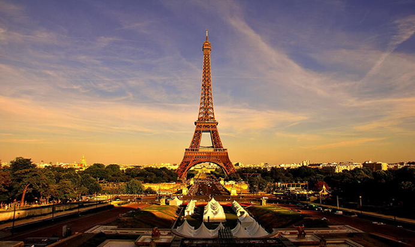Fransa’nın Paris Şehrinde Seine Nehri’nin kıyısında, Champ de Mars parkına inşa edilmiş ve Fransa’nın sembolü haline gelmiş devasa bir demir heykel. 1887 yılında inşasına başlanmış olup 1889’da tamamlanmış. Yapılma amacı ise Fransız devriminin 100. Yılına ithafen düzenlenen dünya fuarı için tasarlanmış. Fuarın giriş kapısı olarak yapılan Eyfel Kulesi, 1909 yılında sökülmesi planlanmış. Fakat kulenin 320 metre olan yüksekliği radyo anteni için uygun görülmüş. O amaçla kullanılmaya başlanmış.
Kule o zaman ki yüksekliği ile 41 yıl boyunca dünyanın en yüksek yapısı olma unvanını elinde bulundurmuş. Paris Kulesi olarak da bilinen ve İngilizcede Eiffel Tower olarak geçen Eyfel Kulesi, aslında adını kendisini inşa eden şirket Gustave Eiffel’den alıyor. 18 bin parça demirin, 2.5 milyondan fazla perçinle birleşmesi yaklaşık olarak 10 ton ağırlığındaki bu kuleyi oluşturuyor.
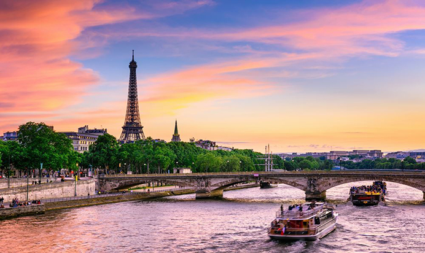Yapıldığı günden bu yana 200 milyondan fazla ziyaretçi çeken ender yerlerden birisi olarak göze çarpıyor. Yıllık olarak yaklaşık 7 milyon ziyaretçi çeken kule, bu rakamla en çok ziyaret edilen yapıların başında geliyor ve ülke ekonomisine oldukça katkı sağlıyor. Paris’e her yolu düşenin muhakkak uğradığı, hatta sadece kuleyi görmek için Paris gezisi yapan milyonlarca turist bile bu kulenin bize ne kadar önemli bir yapı olduğunu kanıtlıyor.
Yapılacaklar listemin başında alan yer alan bu kuleyi sizinde böyle bir listeniz varsa Eyfel Kulesini ekleyebilirsiniz. Daha farklı gezilebilecek yerler görmek için Seyahat Kategorimize göz atamanızı tavsiye ederiz.
Karanlığın Çitleri
Dark Hedges Nedir? Aslında tanıdık gelecek size burası. Daha önce gördüğünüz için değil, yani illaki bir filmde buna benzer bir manzara görmüşsünüzdür. Yada bir kitap okurken, bir sahne size bu manzarayı hayal ettirmiş olabilir.
Dark Hedges Nedir? Türkçe çevirisi “Karanlık Çitler” anlamına geliyor. Kuzey İrlanda’nın Antrim İlçesindeki Armoy köyünde bulunuyor. Korku filmlerindeki sahneleri andıran bu karanlık sokaktaki ağaçlar 18. Yüzyılda arazi sahibi Stuart ailesi tarafından dikilmiş. Yol boyunca yaklaşık 200 yaşında olan Kayın Ağaçlarından oluşan bu yol, en çok resim çekinen ve turist çeken noktalardan biri olma özelliğine sahip bulunuyor.
Ağaçların büyüyüp iç içe girmesi ile birlikte, olağanüstü bir manzara oluşturan ağaçlar, Game Of Thrones ekibinin de dikkatini çekmiş olacak. Dizinin 2. Sezon 1. Bölümündeki bir sahne burada çekilmiş. E boşuna film sahnelerini yada kitaplarda geçen ormanları andırıyor demiyoruz.
Doğruyu söylemek gerekirse araştırmalarım sonucu gidip orayı görenlerin yorumlarına denk geldim. Ve bir özelliği olmadığı sadece burası için program yapmamak gerektiğini. Ama yolunuz Kuzey İrlanda’ya düşerse mutlaka uğranması gerektiğini çünkü gerçekte çok daha farklı göründüğünü dile getirmişler.
Şahsen bu karanlık yolda, yürümek ve bir resmimin olmasını isterdim. Sizinde yapılacaklar listeniz var ise burayı ekleyebilir ve Seyahat Kategorimizi inceleyerek, birbirinden farklı ve güzel yerler hakkında bilgi sahibi olabilir ve kendi listenize bu ilginç yerleri ekleyebilirsiniz.
Gökkuşağı Dağları
Gökkuşağı Dağları Nedir? Hepimiz yağmur sonrası oluşan gökkuşaklarını severiz öyle değil mi? Sürekli karşılaştığımız doğa olayı olmadıklarından, karşılaşınca uzun uzun bakar hatta resimde çekeriz. Şimdi aynı gökkuşağını gökyüzünde değil de yer yüzünde düşünün. Hem de öyle insan yapımı değil bas baya doğa olayı.
Türkçemize Gökkuşağı Dağları olarak biliniyor, İngilizcede ise Rainbow Mountains olarak geçiyor. Dağların oluşumu çok eskilere dayanıyor. Tam net olarak bilinmese de araştırmalar sonucu 80 milyon yıllık bir geçmişe sahip oldukları düşünülüyor. Okyanus tabakasında biriken kireçli kumtaşı ve silttaşı katmanlarının, kıta çarpışmaları sonucu dağların oluştuğu bilinenler arasında. Gökkuşağı renklerine sahip olması da, bir çok farklı mineralden oluşmasından kaynaklanıyor.
Çin’in kuzey batısında yer alan Gansu eyaletinde, yaklaşık olarak 520 km alana yayılan Zhangye Danxia Jeolojik Parkı sınırları içerisinde yer alıyor. 2009 yılında UNESCO tarafından dünya mirası ilan edilen bölge, oldukça fazla turist çekiyor. Tahta yollar ile bağlantılar kurularak, insanların kolayca gezmesi sağlanmış durumda.
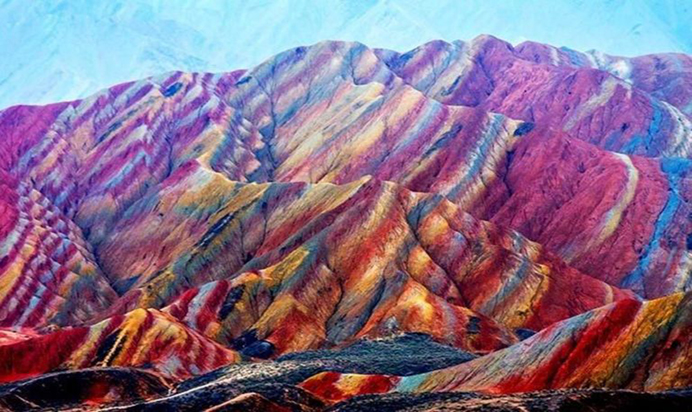Oldukça farklı görünümü ile Çin’de bulunan yerli ve yabancı turistlerin en uğrak yeri olmuş durumda. Kim istemez ki buraya gitmeyi. Çin’e yolunuz düştüğünde mutlaka uğramanız gereken yerlerden birisi bence. Eğer sizinde yapılacaklar listeniz varsa burayı mutlaka ekleyiniz. Resimlerde dahi olağanüstü bir güzelliğe sahip olan Gökkuşağı Dağları, kim bilir gerçekte nasıl görünüyorlardır.
Bunun gibi ilginç daha birçok yer hakkında bilgi sahibi olmak için Seyahat Kategorimizi inceleyebilirsiniz.
Cobh Şehri İrlanda
Cobh Şehri İrlanda. İrlanda’nın güneyinde küçük bir liman kasabası olan Cobh Şehri, Munster Şehrinde bulunuyor. Google verilerine göre 2016 yılındaki nüfusu 12.800. Küçük, sakin ve bir o kadarda meşhur olan şirin bir kasaba.
Cobh Şehrinin bu kadar ünlü olmasının sebebi; gerek mimarisi gerek havası ile çok fazla turist çekiyor olması. Bir diğer sebebi ise; Titanik gemisinin son çağrı limanı olmasından kaynaklanıyor.
Cobh, dünyanın en iyi doğal limanlarından birinde, Büyük Adanın güney kıyısında yer alıyor. 1848 – 1950 tarihleri arasında, 6 milyondan fazla insan İrlanda’dan bu kasabaya göç etmiş. Bu göçler sonrasında ve Titanik gemisinin uğradığı liman olması ile İrlanda’daki en önemli limanlardan biri haline gelmesine sebep olmuştur.
Serin, ılıman ve genellikle yağışlı iklimi ve bol bol yeşillik görebileceğiniz şehir, bu özelliği ile Karadeniz’i andırıyor. Bu şehrin, mimarisi oldukça ilgi çekiyor. Her mimarinin dış cepheden görünüşü, küçük bir masal şehrini andırıyor. Özellikle deniz kıyısındaki birbiri ardına sıralanmış rengarenk evler, Safranbolu’nu andırıyor. Bu şeker evler Cobh’un en eşsiz satış noktalarından birisi. En çok turist çeken bu şehir görenleri büyülüyor.
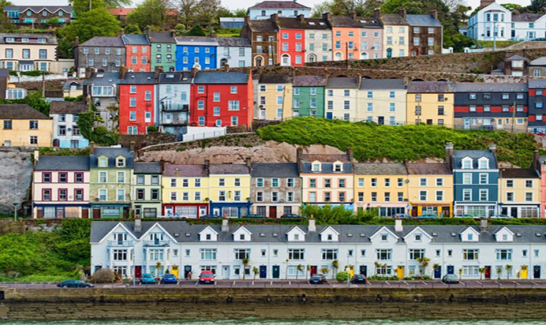Şehir, kültürel, tarihi ve karakteristik olarak çok ilgi çekiyor. Şehrin cazibe merkezlerini gezdikten sonra, aşağıda bulunan tarihi limana inip deniz kenarında seyir size ayrı bir huzur verecektir. Küçük kasabada bir bisiklet kiralayıp tamamını gezmek en büyük hayallerim arasında yer alıyor.
Sadece liman ve şeker evlerden oluşmuyor tabiî ki, gezebileceğiniz İngiliz çarşısı ve çok meşhur tarihi St Peter Kilisesi, Cork Butter Müzesi, Shandon Çanları bir çok ve birbirine sadece yürüme mesafesi kadar uzaklıkta olan bir çok uğrak nokta bulunuyor. Özellikle tarihi limana inip Titanic Trail adı verilen liman ve Titanik ile ilgili geçmişi canlı canlı yaşamanız tavsiye edilenler arasında.
Eğer sizinde yapılacaklar listeniz varsa ve yolunuzun bir gün İrlanda’ya düşeceğini düşünüyorsanız. Bu şehre mutlaka uğrayın.
Niagara Şelaleleri
Niagara Şelalesi Nedir? Hepimiz ilk duyduğumuzda bu şelaleyi, daha doğrusu şelaleleri, tek zannediyoruz. Aslında işin gerçeği böyle değil. ABD ile Kanada arasında bulunan, Niagara Nehri üzerinde üç şelale bulunmakta. Ve her ne kadar Niagara Şelalesi olarak bilinseler de, içlerinden en büyük olanın adı “Horseshoe” diğerlerinin isimleri ise “American Falls” ve “Bridal Vells Fall”’dır.
Niagara Nehri, Kuzey Amerika’nın en büyük nehri olma özelliğine sahip. Şelalelerin etrafı park haline getirilmiş ve bu doğal manzarayı çok daha güzel hale getirmiş. 51 metre yüksekliğinde dünyanın en yüksek ikinci şelalesi olma özelliğine sahiptir. Şelalelerden saniyede toplamda 280 bin metreküp su akmakta. Şelalelerin oluşmasında bundan on bin yıl önce kuzey kutbundan gelen büyük buz kütlelerinin neden olduğu çöküntüler sonrasında oluştuğu biliniyor.
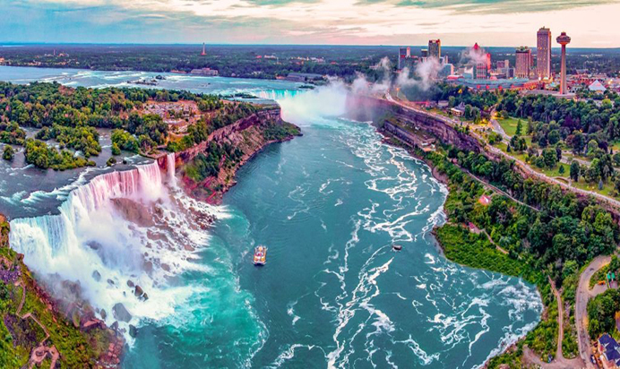Şelale yılda toplam 102 cm kadar genişliyor. Dünyada ters yöne akan tek şelale olması da oldukça ilgi çekici. Üzerinde bulunan hidroelektirik santralleri sayesinde ABD ve Kanada’nın elektrik ihtiyacının bir kısmını karşılamaktadır. Yılda yaklaşık olarak 20 milyon turist çektiği yine söylentiler arasında. Oldukça büyük bir rakam. Bölgeye gelen turistlerin en çok yaptığı etkinlik ise tekne turu oluyor. Kışları yağış alan bir bölge olduğu için, yaz aylarında hava sıcaklığının 36 derecelerde olması sebebi ile en çok turisti yaz aylarında kabul ediyor.
Olağan üstü manzarası ile gördüğünüz anda sizleri büyüleyeceğinden eminim. Niagara Şelalesi Nedir?
Cehennem Kapısı
Cehennem Kapısı Nedir? Türkmenistan’da bulunan Cehennem Kapısını Genel Kategoride mi, yoksa Seyahat Kategorisinde mi yayımlasam bilemedim. Genellikle hakkında bilgi verdiğim konuları Genel Kategorisinde yayınlıyorum, fakat burası öyle bir yer ki, mutlaka seyahat edilmesi ve görülmesi gerekiyor. Şuanda oldukça fazla turist çektiği aşikar. Gelelim bu kapı nedir? Nasıl oluşmuştur?
Cehennem Kapısı olarak bilinen Darvaza Krateri 1971 yılından bu güne, yani yaklaşık olarak 49 yıldır yanmaya devam ediyor. Türkmenistan’ın %70’ini kaplayan Karakum Çölü’nün tam ortasında yer alan Cehennem Kapısı, 69 metre genişliğinde ve 30 metre derinliğe sahip.
Türkmenistan’ı bilen bilir dünyanın en büyük dördüncü doğal gaz rezervine sahip bir ülke. Oluşan bu çukurun kaynağı net olarak bilmese de söylentilere göre 1971 yılında SSCB döneminde, Sovyet bilim adamları doğal gaz araması yapmak için Türkmenistan’da bulunan ve doğal gaz rezervlerinin tam olarak kaynağı olduğu bilinen Darzava Kraterine geliyorlar. Doğal gaz bulma umudu ile yapılan kazılar sırasında büyük bir yer altı mağarasına denk gelirler.
Sondaj çalışmaları sırasında bu mağaranın çökerek burada bir çukur oluşmasına neden olurlar. Daha sonra ise çukurdan sızan gaz sızıntılarından korkarak çukuru ateşe veriyor ve sönmesini bekliyorlar. Fakat günümüzde hala yanmaya devam ediyor. O zaman hala gaz sızdırıyor olabilir.
Her ne kadar tehlikeli gibi görünse de, hatta sırf bu yüzden Cehennem Kapısı gibi bir adı olsa da tehlikeli bir yer değil. Oldukça fazla turistin gittiği biliniyor. Türkmenistan Hükümeti, çukura müdahale etmesi halinde gaz sıkışması sonrasında patlama olacağını tahmin ediyor ve bu yüzden doğal yaşamı engellememek adına karışmıyor. Gelen turistler sayesinde ülke ekonomisine katkı sağladıklarını da göz önüne alırsak, Cehennem Çukuruna gitmeyi de yasaklamıyor.